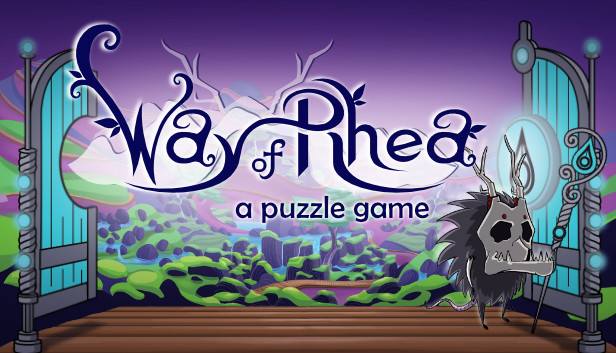
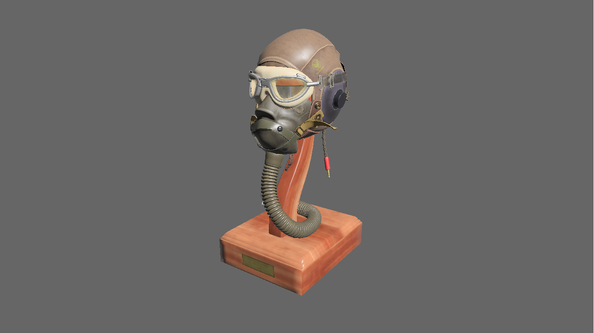

This Month in Rust GameDev #27 - October 2021
Welcome to the 27th issue of the Rust GameDev Workgroup's monthly newsletter. Rust is a systems language pursuing the trifecta: safety, concurrency, and speed. These goals are well-aligned with game development. We hope to build an inviting ecosystem for anyone wishing to use Rust in their development process! Want to get involved? Join the Rust GameDev working group!
You can follow the newsletter creation process by watching the coordination issues. Want something mentioned in the next newsletter? Send us a pull request. Feel free to send PRs about your own projects!
- Rust GameDev Meetup
- Game Updates
- Learning Material Updates
- Engine Updates
- Tooling Updates
- Library Updates
- Other News
- Meeting Minutes
- Discussions
- Requests for Contribution
Rust GameDev Meetup

The tenth Rust Gamedev Meetup happened in October. You can watch the recording of the meetup here on Youtube. The meetups take place on the second Saturday every month via the Rust Gamedev Discord server and are also streamed on Twitch. If you would like to show off what you've been working on at the next meetup on November 13th, fill out this form.
Game Updates
Hydrofoil Generation Sailing
Hydrofoil Generation Sailing (Facebook, Discord) is a realistic sailing/foiling inshore simulator in development for PC/Steam that will put you in the driving seat of modern competitive sailing.
The game is the brain child of industry veteran Stefano Casillo (of Assetto Corsa fame) and features a custom made 3D engine based on DirectX11 via winapi-rs.
An engine conversion to WGPU is currently under evaluation in order to guarantee an easier port to platform such as Steam Deck or even mobile in the future.
Early Access release on Steam is expected in mid 2022.
The Process
Firing Carrockets™!
The Process by @setzer22 is an upcoming game about factory building, process management, and carrot production, built with Rust using the Godot game engine!
For the past two months the project has seen some slow but steady progress. Work has started towards a simple combat system that will have the engineers fighting hordes of robots to defend their factories.
This month the game has seen the following changes and improvements:
- New assets like a robot enemy (concept by @Kath_Art_ic, modelling by @mkdirsrc), a shoulder mounted gun and new machine icons.
- A new system to attach armor-like models to in-game characters.
- Foundations of a combat system.
- Carrockets™! ü•ïüöÄ (1) and (2)
LibraCity - city planning on a needle!

LibraCity is a puzzle city planning game by @djeedai where you need to build a city while balancing it on a needle (the center of the board). It was built for Ludum Dare 49 using the Bevy Engine, and is a first-time use of the engine.
Post-jam, a webassembly version was added and published, which now allows playing the game online.
The code source is freely available on GitHub.
Chaos Theory - gamified double pendulum simulator
Chaos Theory is a tiny HTML5 game by @necauqua where you can draw and simulate pendulums with a few goals and restrictions per level. It was done for Ludum Dare 49 with a help of a small custom engine with Rust being compiled to WASM and drawing shapes to an HTML5 canvas.
You can play the game online, and the source code is available here and here.
Me And My Unicycle
 Can you handle this unstable ride?
Can you handle this unstable ride?
Me And My Unicycle is a 2D physics game by @nikl_me submitted to Ludum Dare 49. It is build with Bevy and the code can be found on GitHub.
Following the LD49 theme "unstable", the game is about riding a unicycle with challenging controls. Try making it through each level without falling.
All assets are self-made. The developer had a lot of fun recording audio and sound effects!
Crunda

Crunda is a game created in 48 hours for Ludum Dare 49.
Its unique wobbly planets are controlled by a Rust library.
Crunda was created by Dan Slocombe, came third, and was rated the most fun competition game! The sources can be found here.
Berry Run

Berry Run is a community stream meme game by @bombfuse_dev built on top of Emerald Engine. It's centered around the Twitch streamer @berrybebopboy and was built in about 2 days.
Help Berry run as far as they can without tripping and falling!
Dodge the babies (no kids, no babies), evade the grannies (they're heading to the grand canyon), and don't touch belf (belf is sacred). Also a bunch of dunces left their logs and rocks lying around, better not to touch those, it would be rude to touch someone's logs and rocks.
Lonely Star

Lonely Star is a 2D 'endless runner' game by @17cupsofcoffee, featuring simple generative music. It was built with Tetra back in February 2020, for Weekly Game Jam 135.
This month, it was made open-source, and received a small update to improve the UI and fix a few bugs.
Soldank

Soldank (GitHub, Discord) by @smokku is an open source clone of Soldat engine. It aims for full compatibility with original game files, mods and gameplay with modernized graphics engine and multiplayer networking code.
Recent developments include:
- Engine/game code split
- Command Line Interface
- Rhai scripting
hecs_rapierintegration- Key/mouse-binding support
- Soldat's
.cfgfiles support - Custom debug shapes rendering
- Performance degradation fix
- Refactored code to build on
hecsECS - ECS entities debug UI
The developer have also written a blog post: 'Engine and scripting'
Graph Game
Navigating the graph map can be stressful
Graph Game (GitHub) uses Bevy as its engine. You can play it from your browser - click on colored triangles, guess the rules and survive as long as possible!
Development has just begun, and the future of the project is not clear - the developer welcomes you to come and discuss next steps on the game's Discord server.
Way of Rhea

Way of Rhea is a puzzle adventure with hard puzzles and forgiving mechanics. It is being produced by @masonremaley.
Latest developments:
- Way of Rhea now has a free demo available on Steam
- Way of Rhea was shown at PAX West this year (as were a couple other Rust games!), and will also be showcased at MAGWest
- A new trailer showing off new level art was published
- Additional animation work, visuals, and puzzles have been added to the game
- Improvements were made to the undo system, the tutorial level, and the dialogue system in response to user feedback
- Some Proton compatibility problems were fixed, some visual glitches were fixed, and support was added for adaptvie vsync
You can stay up to date on the latest developments of Way of Rhea by following it on Steam, or signing up for the mailing list.
PaddlePunks
A round between a player and the AI set to Hard
PaddlePunks is a versus tennis game by Felix Windström with a diverse cast of characters and playstyles and online play with rollback netcode. The game takes cues from both fighting games and arcade classics, and besides netplay supports local play against another human or several levels of AI.
You can download and play the game now on itch.io, or join the Discord to chat with the developer and other players. Updates are also posted to Twitter.
Veloren
An early-morning sunrise
Veloren is an open world, open-source voxel RPG inspired by Dwarf Fortress and Cube World.
In October, Veloren hit 10,000 commits, as well as 10,000 members on the Discord server! Shrubs got added, along with improvements to rivers, and the addition of waterfalls. There have been efforts to diagnose some network issues that have been causing downloads to not work for some people. Crafting is going through overhauls on the backend. New aurora shaders were added as well.
Initial ideas are being discussed to try and improve the amount of asset files that have to be downloaded with each update of the game, which will help improve the 200MB that has to be downloaded after each nightly update. New jewelery has been added, and sneaking is being improved to make agents in the game react better to it. Ongoing worldgen improvemnts are also being made as we head into November.
October's full weekly devlogs: "This Week In Veloren...": #140, #141, #142, #143.
Engine Updates
Amethyst - Starting Fresh

This month, the developers of the Amethyst game engine announced that they would be winding down development.
The Amethyst Foundation, however, lives on! It will be shifting focus to support the wider Rust game development ecosystem, through engine-agnostic libraries, curated guides/lists, and more inititives yet to be announced.
All is Cubes 0.3.0
{kind=link}
All is Cubes (GitHub, Crates.io) by kpreid is a game/engine for worlds made of blocks made of voxels. It is intended to be usable both as an engine or rendering library, or as a game with built-in editor/programming functionality (genre(s) to be determined). While the project is still highly incomplete and API-unstable, the 0.3.0 release marks a lot of now-usable functionality (changelog):
- UI: mouselook, multiple example scenes, inventory with stacks, and rendering to image files.
- Simulation/mechanics: character collision against arbitrary voxel shapes, much-improved light propagation, transactional state updates (all-or-nothing, internally order-independent), and “behaviors” attached to game objects for scripting/animation.
- Rendering: high-voxel-count blocks (incomplete, but usable for text as seen in the above screenshot), “smooth lighting” (interpolated across faces), frustum culling, and correct sRGB-versus-linear color handling.
The next planned milestone is saving/loading.
Tetra 0.6.6
Tetra is a simple 2D game framework, inspired by XNA, Love2D, and Raylib. After a few quiet months, version 0.6.6 has been released, featuring:
- A big overhaul of the keyboard API, with better support for international layouts
- Lots of new functions for manipulating the game window
- A long-requested ECS example
- Bugfixes and docs improvements
For more details, see the changelog.
Learning Material Updates
GameDev Mini Symposium
Click the image to watch the talk
Back in September, the University of Glasgow's GameLab held a 'GameDev Mini Symposium' online. One of the featured speakers was Herbert Wolverson, writer of 'Hands-on Rust', who gave a talk on using Rust for game development.
This talk is now available to view on Herbert's YouTube channel.
Tooling Updates
SPV

SPV by Albin Sjögren is a calculator utility for working with astronomical position and velocity data.
What was added for the first alpha release:
- A new UI
- Corrected vector normalizing
- JSON and TXT exporting
The primary features that are being worked on:
- A crate version
- Output file structure
- Batch processing
For any feature requests, reach out to the developer on Discord or GitHub.
Library Updates
wgpu-0.11 release
 experimental Bevy branch running on WebGL2 via wgpu
The team is happy to announce the release of wgpu-0.11 and naga-0.7. Details can be found on the gfx-rs blog. The most exciting feature is WebGL2 support. With some caveats, users no longer need to wait for WebGPU in the browsers in order to deploy on the Web. Support is still a bit rough, and patches come out regularly, but most examples work.
@kvark also visited Rust LA Meetup to talk about Naga and the history of processing shaders with Rust.
rend3-0.2 Release
 Improved shadows and rendering with rend3 0.2
Improved shadows and rendering with rend3 0.2
rend3 is a 3D rendering library that focuses on having an easy to use interface without sacrificing performance or customizability.
As part of their monthly release schedule, the developers are excited to announce the release of rend3-0.2. The most prominent change is the ability to use fully customizable materials. Any combination of data and textures can now be used as a material for custom render routines. This unties the user from PBR-based materials.
Along with the customizability that comes with this change, the CPU time required to render a complex scene is 7x less due to highly optimal data structures. For more information see this talk at the Rust graphics meetup.
The v0.2 version was published on crates.io (docs and examples). The 0.3 release is just a week away and further improves customizability.
hecs_rapier 0.11.0
hecs_rapier is a physics engine for hecs ECS. It is a direct port of bevy_rapier2d.
Recent development added joints and physics_hooks support.
This makes hecs_rapier feature complete, with bevy_rapier2d feature parity.
bevy_atmosphere 0.1.1
bevy_atmosphere (GitHub) by @JonahPlusPlus is a procedural sky plugin for Bevy.
By adding the AtmospherePlugin, users get a skybox around the camera in their scene.
Users can also set the appearance of the sky adding a AtmosphereMat resource.
0.1.0 and 0.1.1 have been released on crates.io.
0.1.1 changes the default position of the sun to be in the sky, so only the plugin is needed to get a Unity-like sky.
bevy_kira_audio
bevy_kira_audio is a Bevy plugin that integrates the audio library Kira into Bevy applications.
In the latest version 0.6.0, you can load files with custom semantic
durations and play looped audio with an intro. The plugin now also cleans up
old sound instances. Following Bevy, bevy_kira_audio is now licensed under
dual MIT + Apache 2.0, and the library will no longer crash on systems without
an audio device.
bevy_verlet

bevy_verlet is a lib for projects using Bevy Engine
providing a plugin to use verlet integration
physics. Very useful for cloth simulation and joints, and less expensive than
complex physics engine, it is a nice addition to 2D or 3D projects. Making good
use of the Entity-Component-System architecture of the bevy engine, any entity
can become a VerletPoint and have physics applied to it.
The crate also provides sticks which constrains the points in order to create strings or cloth. With its modularity, you may customize the physics precision (iterations), the gravity, and the physics time step to use.
New features:
- Query parallel batching and custom batching size
- Global documentation
- Fixed issues with timesteps
- Improved examples
You may contact the author on Twitter at @ManevilleF or join the discussion.
Bevy Pen Tool
Bevy Pen Tool is a plugin that helps developers make 2D paths using Bezier curves. Its user interface provides functionality for:
- spawning Bezier curves,
- moving end points and control points of Bezier curves,
- linking individual Bezier curves to each other,
- grouping curves,
- saving and loading paths as look-up tables (typically for animations and agent movement),
- generating arbitrary 2D meshes that fill the interior of a path using the Lyon crate,
- generating a mesh that follows a path like a road,
- saving meshes and roads in ".obj" format,
A stable version of Bevy Pen Tool should come out as a crate shortly after Bevy 0.6 shows up. Here is a link to the repo for more information.
Sparsey
Sparsey by @LechintanTudor is a sparse set-based Entity Component System (ECS) with component storage grouping, granular component change detection, fallible systems and beautiful syntax.
The latest release (0.4) adds support for optional system parameters, which
allows Option<Res<T>> and Option<ResMut<T>> to be used in system functions.
This release also features a refactored ComponentStorage which makes adding,
removing and swapping components faster, swapping being especially important
since it enables component grouping, a features that makes certain queries
specified by the user extremely fast.
Finally, some implementation details were hidden from the public API and the
#[must_use] attribute was added to functions whose results should not be
discarded.
godot-rust

godot-rust (GitHub, Discord, Twitter) is a Rust library that provides bindings for the Godot game engine.
Recent developments have added foundational support to async that enables users to make use of the Rust async runtimes with the Godot Engine (thanks to chitoyuu for the PR).
In addition to the foundational support, lyonbeckers was kind enough to
include a new recipe in the User Guide that covers
how to configure async with tokio.
The team also merged several smaller bug fixes in #791, #795, and #800 and is making steady progress towards version 0.10.0.
Finally, the team has recently added a third party project section in the book to help promote games, applications, and libraries/tools that are working with godot-rust. If you have a project that you would like to be included, please feel free to reach out to the godot-rust team.
Other News
- Other game updates:
- LD49 Unbalanced Brawl (GitHub) is an autochess with ever-changing rules in the shop.
- LD49 Chevalchemy (GitHub) is a game where you play as a horse alchemist working for the great Neighcolas Flamel.
- LD49 Proc Spider (GitHub) is a small game where you play a big spider chasing small spiders.
- mk48.io (GitHub) is an online multiplayer naval combat game, in which you take command of a ship and sail your way to victory.
- Tweets about Bitgun progress: new inventory and weapon systems, new item pickup, jumping zombies, death animation.
- An update about the progress of Rust version of Nox Futura.
- A Recall Singularity shared a YouTube video that shows new shooting sounds, camera movement, and asteroid dragging.
- Other learning material updates:
- A video by TanTan about rewriting a voxel game three times: in Unity, Rust (no engine) and Bevy.
- Other engine updates:
- A recording of the first rg3d live-coding stream.
- The first prototype of VNgine - Visual Novel Engine - was announced on /r/rust.
- Also, a general purpose graphics engine Blue Engine was announced on /r/rust_gamedev.
- Other tooling updates:
- Fearless-NES is a NES emulator written using egui, macroquad, and GilRs.
- FishSteam is a tool for deploying SteamWorks-enabled steam builds for Windows/macOS/Linux without SteamWorks SDK on a CI.
- Other library updates:
- Crevice v0.8 brings a direct support for many math libraries and allows to generate GLSL source from structs.
- SPV 0.0.6 is the second pre-alpha release of a celestial object position and velocity calculator.
- Thunderdome generational arena library released 0.4..0.5 versions.
- egui 0.15 brings: syntax highlighting, horizontal scrolling, new monospace font, and a new opt-in glow backend for eframe.
- New puffin-egui/puffin-viewer allows selection and manipulation of multiple frames.
- Shalrath is a fully-safe Rust representation and nom parser for Quake map files.
Meeting Minutes
There is currently discussion ongoing around bringing back the Rust GameDev Working Group's regular meetings.
If you are interested in getting involved, please join the discussion thread on the working group's issue tracker!
Discussions
Async Game Server Design
On the Rust user forum, there was a post
asking how to use async/await (more specifically, tokio and
tokio_tungstenite) to develop a multiplayer game server.
The responses contain some useful ideas and advice which
may be helpful for other people's projects!
Requests for Contribution
- Graphite is looking for contributors to help reach the 0.1 Alpha release.
- winit's "difficulty: easy" issues.
- Backroll-rs, a new networking library.
- Embark's open issues (embark.rs).
- wgpu's "help wanted" issues.
- luminance's "low hanging fruit" issues.
- ggez's "good first issue" issues.
- Veloren's "beginner" issues.
- Amethyst's "good first issue" issues.
- A/B Street's "good first issue" issues.
- Mun's "good first issue" issues.
- SIMple Mechanic's good first issues.
- Bevy's "good first issue" issues.
That's all news for today, thanks for reading!
Want something mentioned in the next newsletter? Send us a pull request.
Also, subscribe to @rust_gamedev on Twitter or /r/rust_gamedev subreddit if you want to receive fresh news!
Discuss this post on: /r/rust_gamedev, Twitter, Discord.